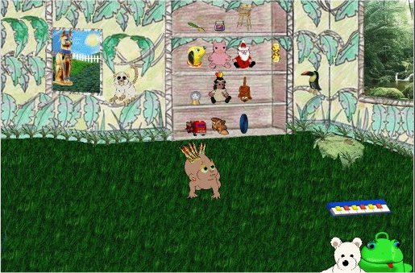
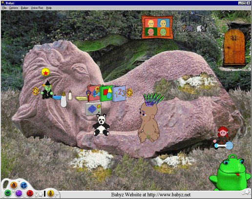
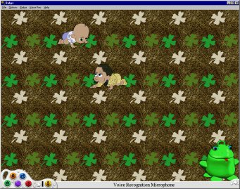

New Babyz Playpens
Click picture or name to download.
To get lots of playscenes for your Babyz, go to these sites -- and while
you're there browse for other goodies :-)
For some of Jesslan's scenes
the
Babyz Crib
For some of Jesslan's scenes
Purple Flower Babyz
For Dani's scenes
D.R.N
This page contains any playscenes or playpen backgrounds
etc that I make for the Babyz game.
A kit for making new kitchen
Playscenes
part of my "Ultra-easy" editing range. This particular one has the filmstrips
separated out, but I have not had time to put the bitmap headers on them for
you.
A kit for making new
Clothes Closet Playscenes
part of my "Ultra-easy" editing range. This particular one has the filmstrips
separated out, but I have not had time to put the bitmap headers on them for
you.
A kit for for making new
Family Room Playscenes
part of my "Ultra-easy" editing range.
An easy-edit kit for making new
Attic Playscenes
An easy-edit kit for making new
Back Yard Playscenes
An easy-edit kit for making new
Playroom Playscenes
This package lets you change your playroom to your heart's content. Make sure
that you read the included Readme carefully, and keep a backup copy of your
original Playroom.

My Babyz Jungle Playroom
Make sure that you read the included Readme carefully. If you already have the
Playroom easy-edit kit, the files inside this one will overwrite the relevant
Playroom .env, .flm, .flh and backdrop .bmp items, so make sure that you've
got the originals stored safely before you move these into the \Resource\Area
and \art\Sprites\Area\Playroom directories.
.

Change your Nursery yourself!
/
The
secret Wood bits
This package lets you change your nursery to your heart's content. The picture
shows my own latest scenario, in which I use the backdrop from my Petz Secret
Wood scenes and I altered the window and crib-front filmstrips to simply be
transparent. Also I've enabled the "animal" mobile. You can make more creative
stuff than this! Make sure that you read the included Readme carefully.
If you want your playscene to look like the one in the picture, download the
Secret Wood bits. They will overwrite the relevant Nursery window and crib
.flm, .flh and backdrop .bmp items, so make sure that you've got the originals
stored safely before you move these into the \art\Sprites\Area\Nursery
directory. Click on the door if you want to see what's there. When your baby
is tired, lift it over the patch of soft mossy grass which is on the lion's
flank.
If you want to have the full "Secret wood" experience,
download the
sounds also.
The sound zip contains an overwriting Nursery file which overwrites the
original external-nursery one. The .txt and .wav files go into the
\art\Sprites\Area\Nursery directory.
.
These "hidden playpens" below are only needed for people who
have a version of the game which, like mine, doesn't allow the simple
Registry change to work.
I hadn't realised that there was more than one version of the game until 2004
-- only one game release, but two or three versions. For people who would like
to try it,
click here for a little
trick which might work for you; Daniel Wright pointed out that this works for
his game, and probably for many other people's. If it doesn't work for yours,
you can either go to Daniel's
The Babyz Crib where I'm told he has an .exe file which
works with this fix, or try the two patchfiles below instead. These patchfiles
of mine will give you a new default "logo" picture for the playpen, as well as
a new splash-screen and "Grandmother's House" screen.

Playpen with Hay Carpet
/
Playpen with Shag
Carpet
NOTE: The above playpens are in the form of patchfiles. They patch your game's
main executable file. Make a copy of any file that you intend to patch, as
these are important files and you will one day want your original back
again!
If you have a babyz.exe which is a different size from mine, these patches
won't work for you; also my instructions will be slightly off because the
place you'll be looking for will be in a different place. In that case, if you
want to edit the internal pictures, all I can suggest is that you try using
ResHacker to
replace the bitmaps that you want to change. But I cannot stress enough; if
you're going to edit your .exe, keep a backup copy safe somewhere else just in
case you get a corruption, and also make sure that you have safe copies of all
your adopted babyz.
.